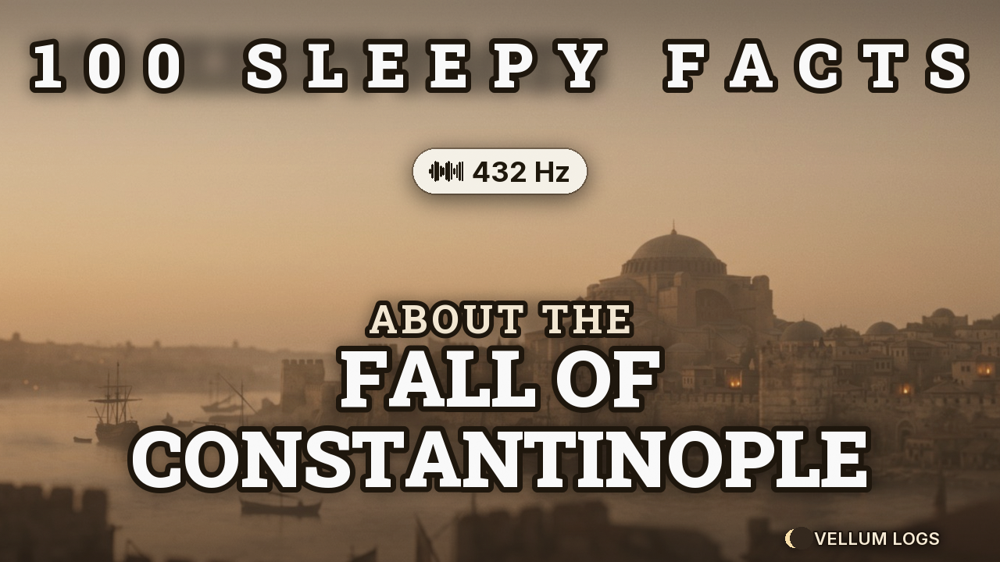
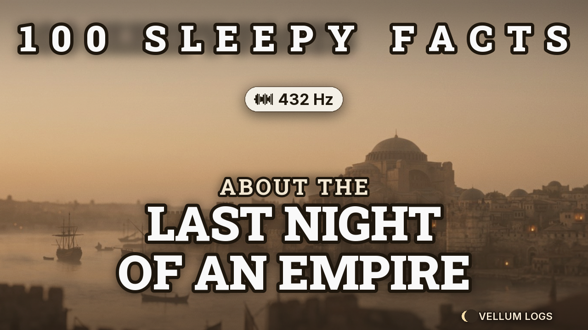
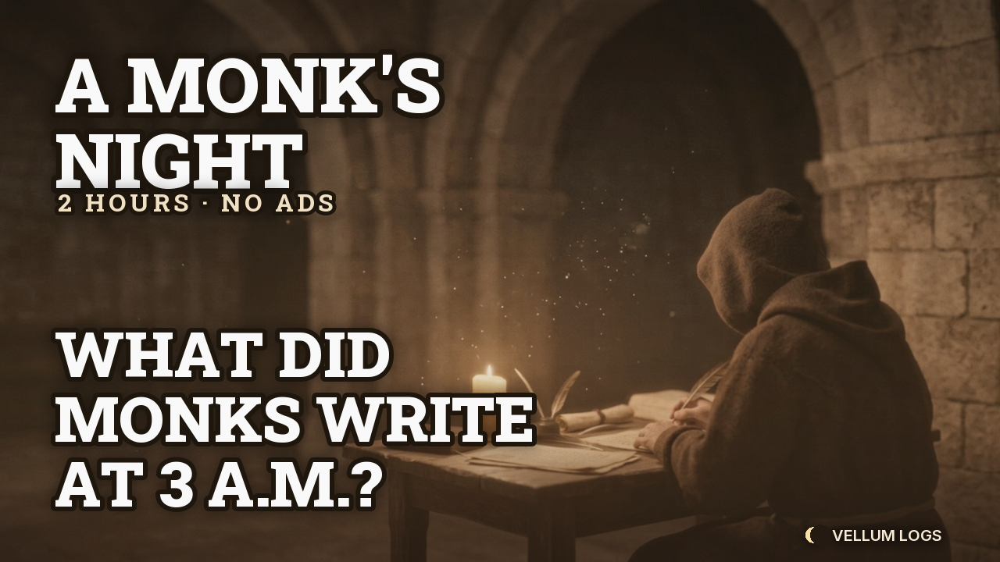
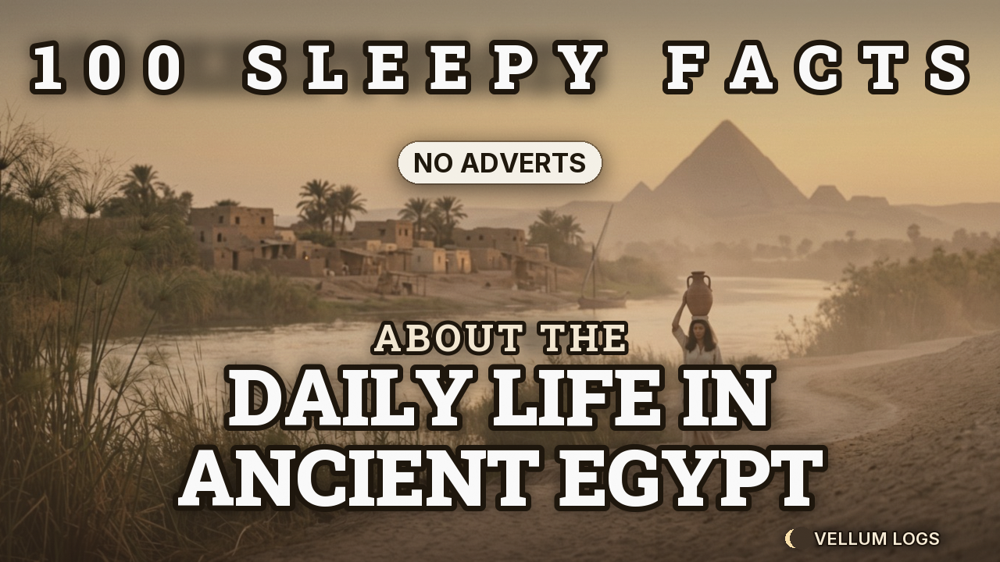

تشريح كامل للقناة المرجعية بالأرقام، ثم نظام تنفيذي جاهز: 5 صيغ محتوى، خطة 90 يومًا، قوالب عناوين ووصف وكلمات مفتاحية، وصفة مونتاج، و5 صور مصغرة مولّدة فعليًا بهوية النيش. كل ما هنا مبني على بيانات مسحوبة من يوتيوب وSocial Blade في 19 أكتوبر 2026.
القناة عمرها ≈ 15 شهرًا فقط. الأرقام التالية هي التي يجب أن تبني عليها قراراتك، وليس عدد المشتركين وحده.
نفس القناة، نفس القالب، نفس الطول — لكن الفارق 30 ضعفًا. الفارق دائمًا في الموضوع أولًا ثم العنوان.
| الفيديو | المدة | المشاهدات | الدرس |
|---|---|---|---|
| Life In The Stone Age | 2:54 | 213K | موضوع بدائي + «حياة يومية» = جمهور واسع جدًا |
| 100 Sleepy Facts About Human Evolution | 2:25 | 152K | موضوع تعلّمي + كلمة Facts في العنوان |
| How did we Survive the Dark Ages?! | 2:26 | 137K | سؤال + «كيف نجا الناس» = توتر هادئ |
| 100 Sleepy Facts About Tudor England | 2:28 | 133K | دولة/عصر محدد > موضوع عام |
| What Was it Really Like to be a Caveman? | 2:21 | 124K | صيغة «ما الذي كان حقًا» تبيع فضولًا |
| 100 Sleepy Facts About Ancient Sparta | 2:23 | 34K | موضوع مستهلك — يحتاج زاوية مختلفة |
| 100 Sleepy Facts About Napoleon | 2:24 | 17K | شخصية مشهورة جدًا = منافسة عالية |
| 100 Sleepy Facts About Roman Baths | 2:20 | 7.3K | موضوع ضيق جدًا، والفيديو حديث (يوم واحد) |
| 100 Sleepy Facts About Pandemics | 2:27 | 6.7K | موضوع ثقيل/مقلق — يعارض وعد النوم |
| 100 Sleepy Facts About the Empire State Building | 2:17 | 8.4K | خارج نيش التاريخ القديم = جمهور مختلف |
بدل تقليد «100 حقيقة» حرفيًا، ابنِ 5 سلاسل تمنحك تنوعًا يحميك من سياسة المحتوى غير الأصيل، وكلها بنفس الطول والوعد.
ليلة واحدة أخيرة في مدينة أو إمبراطورية. سرد زمني من الغروب للفجر.
يوميات شخص حقيقي (طبيب، جندي، راهب) بضمير المتكلم. أقوى صيغة للأصالة.
تحدي مباشر للنموذج: 100 حقيقة عن موضوع واحد، بترقيم صوتي بطيء.
كيف كان الناس ينامون، يأكلون، يعملون. أسئلة يومية بسيطة جدًا.
مكان واحد: غرفة، معبد، سفينة. وصف مكاني يريح الدماغ.
هذا هو الهيكل الحرفي المستخلص من أول 90 ثانية في فيديو Stone Age، مطبّقًا على قناتك.
حوالي 190 كلمة ≈ 90 ثانية بسرعة 130 كلمة/دقيقة. هذا هو الجزء الذي يحدد إن كان المشاهد سيبقى 30 ثانية أم 30 دقيقة.
خمس صور 1280×720 بهوية النيش: خلفية هادئة بألوان ترابية، خط Slab أسود ثقيل بظل ناعم، شارة صغيرة. مولّدة بمحرك studio/tools/make_thumbnail.py.




خلفية سينمائية هادئة + نص عملاق (3–9 كلمات) + شارة بيضاء واحدة. لا أكثر. أي عنصر رابع يقتل الوضوح على الموبايل.
Slab Serif ثقيل (Roboto Slab Black) بحدّ أسود وظل ناعم — نفس عائلة خط القناة المرجعية، لكن بتوقيع Vellum (هلال أسفل اليمين).
عسلي/رملي + بني داكن. لا أزرق نيون ولا أحمر تحذيري. الصورة يجب أن تبدو كأنها صفحة من كتاب قديم، لا إعلان.
studio/configs/، غيّر النص أو الإحداثيات، ثم:
python3 tools/make_thumbnail.py configs/ep01.json.
الصيغة العامة: [رقم/اسم] + [الموضوع] + | Sleepy History. اجعل أول 40 حرفًا تحمل الوعد كاملًا، لأن يوتيوب يقطع الباقي على الموبايل.
100 Sleepy Facts About Roman Baths | Vellum Logs100 Sleepy Facts About Daily Life in Ancient Egypt — No Adverts100 Sleepy Facts About Viking Longships | Sleepy HistoryThe Last Night of Constantinople — 1453 | Sleepy HistoryThe Last Night of Pompeii | A Calm History DocumentaryThe Last Night of the Library of AlexandriaA Plague Doctor's Journal, London 1665 | Sleepy HistoryA Roman Soldier's Diary: The Night Before BattleA Crusader's Log from the Walls of AcreHow Did Medieval Peasants Sleep? | Sleepy HistoryWhat Did People Eat During a Siege? | Calm HistoryInside the Library of Alexandria | Sleepy History3 Hours of Calm History — Fall Asleep to the Ancient World2 Hours of Byzantine History to Fall Asleep Toمبني على البنية الحرفية لأوصاف القناة المرجعية، لكنه يذكر المصادر ويبني هوية «السجل» بدل قائمة الحقائق.
القاعدة: 3–5 وسوم فقط في نهاية الوصف + الكلمات نفسها مدمجة في جمل طبيعية. الحشو يضر ولا ينفع.
هذه ليست نصائح جمالية — هي أرقام. أي انحراف عنها يظهر فورًا في منحنى الاحتفاظ.
1920×1080 · 24fps. حركة Ken Burns بطيئة 2–4% فقط. انتقالات Cross-fade 0.8–1.2 ثانية. ممنوع: وميض، قطع سريع، مشاهد عنيفة أو دموية.
راوٍ واحد ثابت · −16 LUFS · سرعة 125–135 كلمة/دقيقة (أبطأ 20% من الطبيعي). EQ: قطع أقل من 80Hz وأعلى من 9kHz + Reverb غرفة صغيرة.
Ambient واحد مستمر · −26 LUFS · 432 Hz حقيقي. لا تغيّر مفاجئ، لا إيقاع قوي. أضف طبقة brown noise خفيفة (−34 dB) لدفن ضجيج البيئة.
6–10 فصول بأسماء سردية («The Wall at Dawn»، «The Last Liturgy») لا «Part 1/2». الفصول ترفع الاحتفاظ وتسمح بالإعلانات إن قررت الربح.
شارة صغيرة كل 10 حقائق («X / 100»). عناوين فصول هادئة بخط Inter، تظهر 6 ثوانٍ ثم تختفي. لا نصوص متحركة كاملة.
60 ثانية صامتة مع fade للأسود. لا موسيقى نهاية صاخبة — هذا أهم عنصر في «تجربة النوم» وأكثره إهمالًا.
فيديو واحد أسبوعيًا + 2 Shorts. كل فيديو يُضاف لسلسلته وقائمة تشغيل «History Facts For Sleep» فورًا.
| الأسبوع | الفيديو | السلسلة | المدة | عنوان الصورة المصغرة |
|---|---|---|---|---|
| 1 | The Last Night of Constantinople | Lost Nights | 2:30 | THE LAST NIGHT OF AN EMPIRE |
| 2 | 100 Sleepy Facts About Roman Baths | 100 Slow Facts | 2:20 | 100 SLEEPY FACTS |
| 3 | A Plague Doctor's Journal, 1665 | A Log From | 2:00 | A PLAGUE DOCTOR'S LOG |
| 4 | How Did Medieval Peasants Sleep? | Quiet Craft | 2:15 | HOW DID THEY SLEEP? |
| 5 | 100 Sleepy Facts About Viking Longships | 100 Slow Facts | 2:25 | 100 SLEEPY FACTS |
| 6 | The Last Night of Pompeii | Lost Nights | 2:30 | THE LAST NIGHT OF POMPEII |
| 7 | A Crusader's Log from Acre | A Log From | 2:10 | A CRUSADER'S LOG |
| 8 | Inside the Library of Alexandria | Vanished Rooms | 1:55 | INSIDE THE LIBRARY |
| 9 | 100 Sleepy Facts About Daily Life in Ancient Egypt | 100 Slow Facts | 2:35 | 100 SLEEPY FACTS |
| 10 | What Did People Eat During a Siege? | Quiet Craft | 2:05 | DINNER UNDER SIEGE |
| 11 | A Roman Soldier's Diary | A Log From | 2:20 | A ROMAN SOLDIER'S DIARY |
| 12 | 3 Hours of Calm History (تجميع) | Compilation | 3:00 | 3 HOURS OF CALM |
قناة النوم تُستهلك ليلًا. هذا يغيّر وقت النشر وطريقة كتابة الوصف بالكامل.
20:00–22:00 بتوقيت الساحل الشرقي الأمريكي. نفس اليوم ونفس الساعة أسبوعيًا — الجمهور يبني عادة «ليلة الأربعاء».
45–60 ثانية: مقطع واحد مثير من الفيديو + نص «Full log tonight at 8». وظيفتها جذب مشترك جديد فقط.
آخر 20 ثانية: «الفيديو التالي للنوم» + زر اشتراك. لا تضع فيديوهات قصيرة أو غير نوم في الـ End Screen.
استطلاع أسبوعي: «Any topic for this week's log?» + منشور شكر عند كل ألف مشترك. القناة المرجعية تفعلها وتجيب 800+ صوت.
سؤال واحد: «What should I read next week?» — يولّد أفكارًا مجانية ويضاعف التفاعل.
سلسلة لكل صيغة + قائمة جامعة «History Facts For Sleep». الخوارزمية تحب البنية الواضحة.
studio/art/.studio/configs/ep01.json.